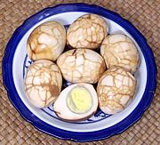

|
Tea EggsChina - Chá Yè Dàn | ||||
| Serves: Effort: Sched: DoAhead: |
4 app ** 2+ hrs Best |
A common appetizer and street vendor snack in China, these are easy to make and pretty enough to impress your guests. They are also more flavorful than plain hard boiled eggs. Of course there are many variations. | |||
|
|
8 ar ----- 1 3 2 1 1 3 ----- |
--- T T t T T --- |
Eggs Water -- Flavorings Salt Black Tea Leaves Five Spice Powder (1) Star Anise Sugar Soy Sauce ------------ |
Make: - (2+ hrs - 20 min work)
|